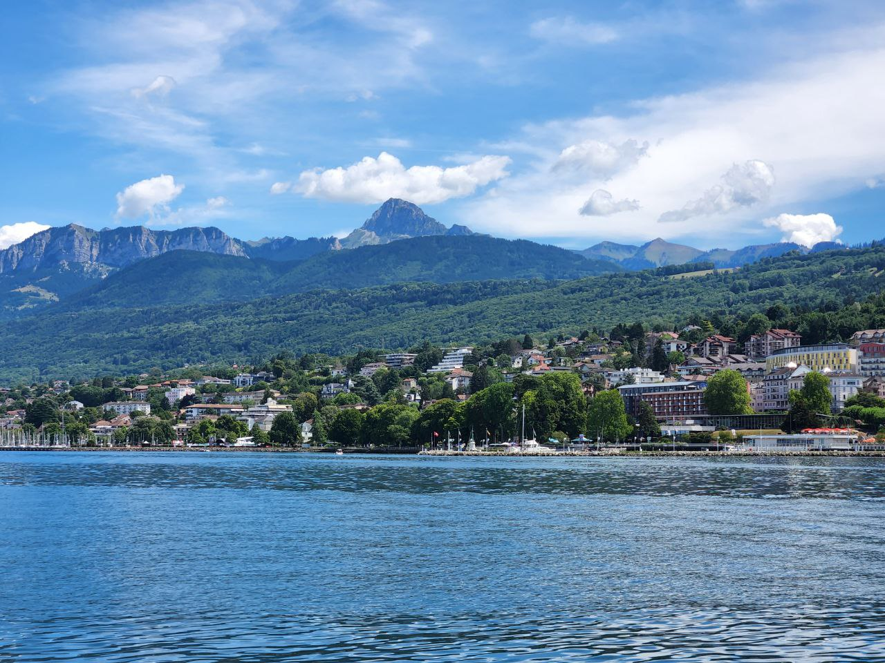
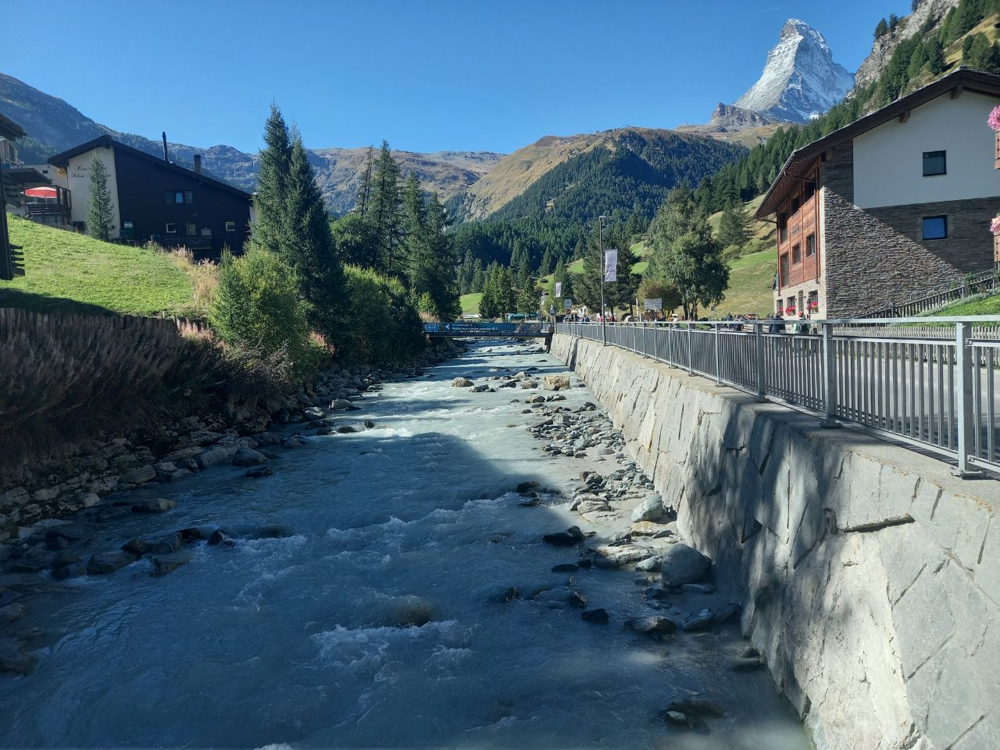

Places I've Called Home
I've been lucky enough to live in a few different countries.
- Iran – So, I grew up in Mashhad, this city in the eastern part of Iran, and hung out there for like 14 years. I also spent a year and a half in Tehran, the capital, and another six years in Shahroud, which is this really charming small town.
- Japan – I was in Japan for about 9 months when I was just a 1-year-old, tagging along with my family. I have some adorable pics of me dressed up in Japanese outfits!
- Australia – Australia might just top my list of faves for its awesome vibes, cool people, and culture! I spent 6 months there in year 10, went to Kingswood Highschool in Penrith, a suburb of Sydney. Totally picked up the Australian accent while I was there, though it's pretty much gone now. Hit up Brisbane, Melbourne, Canberra, and did loads of sightseeing in Sydney too.


- Switzerland – Spent four awesome months in Lausanne from July to October in 2022. Ended up making friends from over 20 different countries! Did a bunch of hiking and checked out loads of gorgeous Swiss cities like Geneva, Zermatt, Kinderstagen, Zurich, Neuchâtel, etc. Also went around Europe a bit e.g. Austria, Italy and Germany. Totally would choose Switzerland for my honeymoon, no doubt about it.



- Germany – I lived in Bochum for 6 months from July to December 2023. It was a pretty chill time, mostly sticking to indoor stuff like hitting the gym and swimming. Totally obsessed with Unifit back then – that place was my paradise. Also took some trips to Paris, Munich, and Switzerland (again), plus hit up nearby cities like Dortmund, Düsseldorf, and Cologne while I was there.